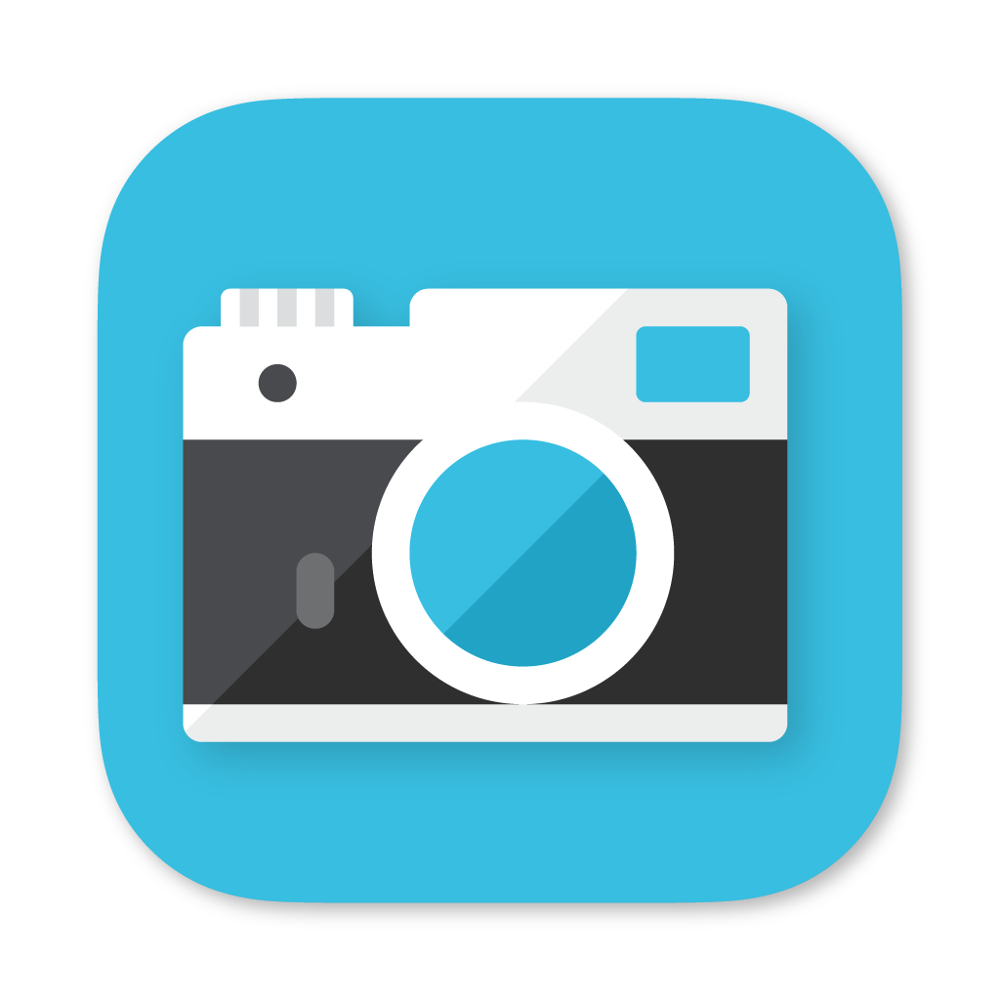
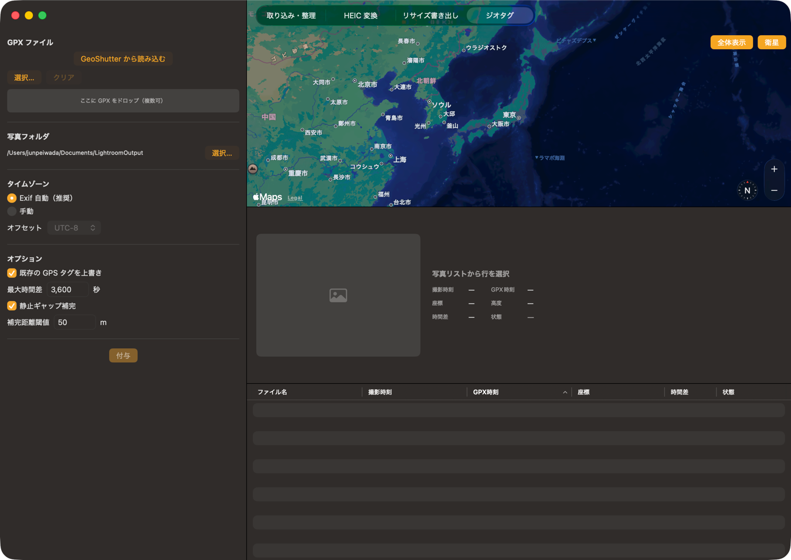

撮影後の写真ワークフローを一本化する macOS 統合デスクトップアプリ。 仕分け・HDR 変換・リサイズ・ジオタグを、タブで切り替える 1 つのアプリに集約。
動作環境: macOS 15 以降（Apple Silicon） ／ ジオタグ書き込みには exiftool が必要

RAW/JPG ペアの仕分け、孤立した RAW の退避。撮影後の最初の交通整理を安全に。
GPX トラックログと撮影時刻を突き合わせ、写真へ GPS・日時タグを書き込む。
ゲインマップを保持したまま HEIC を生成。写真アプリと同じ HDR 構造で書き出す。
共有用に高品質な JPEG へリサイズ。アスペクト比を保ったまま一括で縮小。
brew install exiftool）。
他のタブは exiftool なしでも動作します。